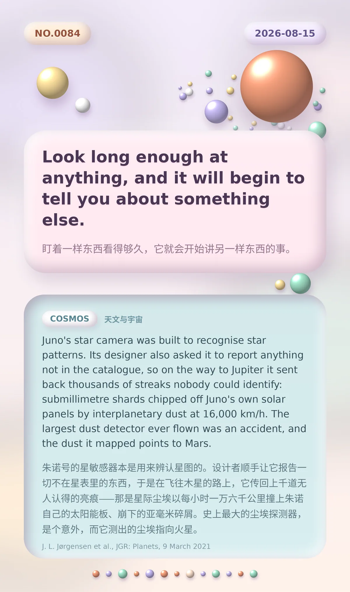

Look long enough at anything, and it will begin to tell you about something else.｜盯着一样东西看得够久，它就会开始讲另一样东西的事。
Juno's star camera was built to recognise star patterns. Its designer also asked it to report anything not in the catalogue, so on the way to Jupiter it sent back thousands of streaks nobody could identify: submillimetre shards chipped off Juno's own solar panels by interplanetary dust at 16,000 km/h. The largest dust detector ever flown was an accident, and the dust it mapped points to Mars.｜朱诺号的星敏感器本是用来辨认星图的。设计者顺手让它报告一切不在星表里的东西，于是在飞往木星的路上，它传回上千道无人认得的亮痕——那是星际尘埃以每小时一万六千公里撞上朱诺自己的太阳能板、崩下的亚毫米碎屑。史上最大的尘埃探测器，是个意外，而它测出的尘埃指向火星。
冷知识由执笔的模型自行查证。逐条断言、来源与所引原句存档在纯文字副本里，未经程序逐字校验，留作事后核实。